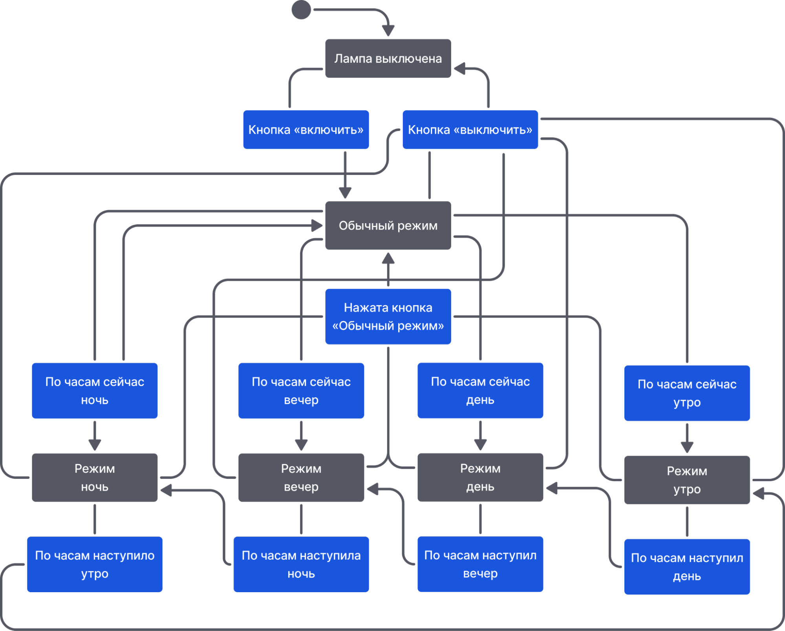
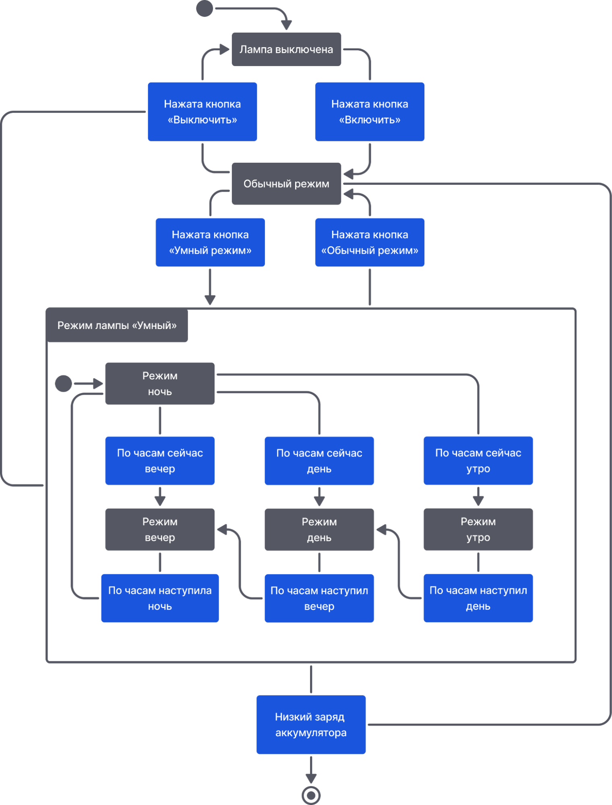

Прошлая схема лампы выглядела довольно просто, ведь с ней можно так много сделать! Распишем процесс переключения между разными режимами (состояниями) работы лампы: обычный, ночной, дневной, утренний и вечерний.
Схема становится запутанной и нечитаемой. Кроме того, почти в любой момент лампу можно выключить или перевести в обычный режим. И получается, что от каждого нового состояния в режимах лампы придётся учитывать этот момент… Значит, надо объединить эти состояния!
Для этого используется составное состояние, которое может содержать в себе другие состояния, называемые дочерними. Они будут возникать только в том случае, если активно составное состояние, в котором они находятся, то есть родительское. Составное состояние рисуется как прямоугольник с заголовком, в котором записывается название состояния. Внутри прямоугольника под заголовком размещаются дочерние состояния.
Так мы объединим состояния, связанные с умной лампой, в одно общее составное состояние. Обратите внимание:
Составные состояния — это то, что делает машины состояний способными обрабатывать более сложные задачи, чем обычная машина состояний. При этом состояния могут вкладываться друг в друга, образуя древовидную структуру или иерархию. Поэтому такие машины состояний называют иерархическими.